使用指南
面向点评设计师与开发同学的完整操作流程，从环境准备到代码交付，共 15 个步骤。
- 01 MasterGo 设计稿 AI 友好图层规范，自动布局 + 语义命名
- 02 DSL 解析 & 切图 D2C Skill 提取结构，自动切图并上传
- 03 视觉验证 AI 对比截图还原度，≥ 85 分方可继续
- 04 Picasso TSX 输出 Build 校验通过，可直接对接接口数据
- 视觉还原度
- 80%+
- 效率提升
- 70%+
- Pipeline
- 全自动
阶段一：准备工作 环境搭建
-
安装 CatPaw 必需
下载并安装 CatPaw 客户端，使用美团 SSO 账号登录。CatPaw 是 D2C 工作流的核心载体，所有 Skill 的执行都在 CatPaw 中完成。
-
安装 materialx-d2c Skill 必需
在 CatPaw 中安装 D2C 核心 Skill，可通过 Skill 市场页面直接安装，或通过终端命令安装：
mtskills i materialx-d2c-skill --target-dir ~/.catpaw/skills如果你在 Picasso 项目中使用，可以下载 Skill 真机调试，解压后放入~/.catpaw/skills/目录即可生效。下载 picasso-liveload-verify.zip → -
安装 MasterGo 插件 推荐
在 MasterGo 插件市场点击【AI友好化】安装该插件。它可以辅助你完成设计稿的规范化工作，包括自动命名、自动布局检测等。
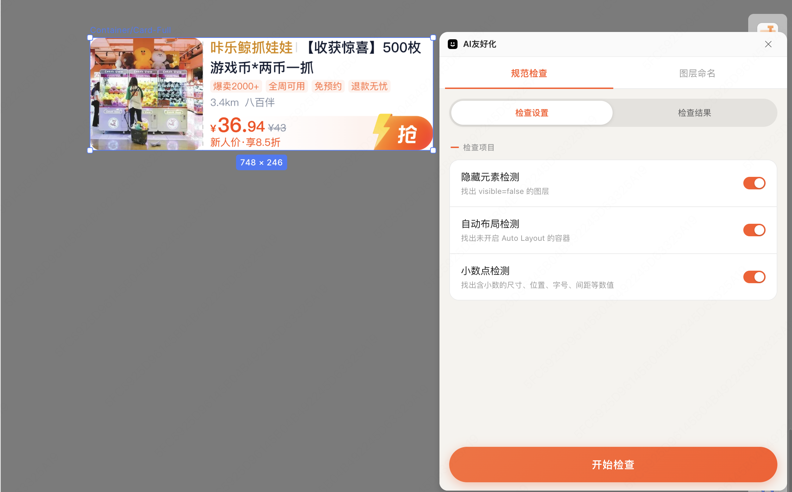
-
生成 SSH Key 必需
用于从内部 Git 仓库拉取代码。在终端执行以下命令生成密钥，并将其添加到 Code 平台：
ssh-keygen -t ed25519 -C "your_mis@meituan.com" cat ~/.ssh/id_ed25519.pub得到密钥后，打开 dev.sankuai.com，点击右上角 SSH KEY 添加公钥后保存。
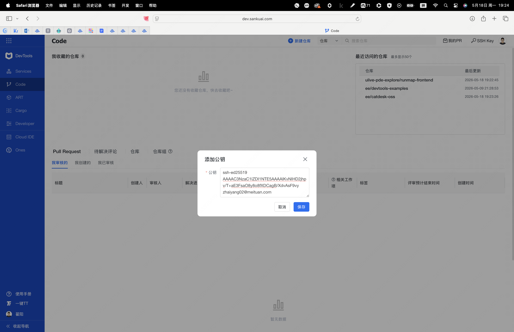
-
克隆代码仓库 必需
通过
git clone将目标 Picasso 项目拉取到本地：git clone git@code.sankuai.com:your-group/your-project.git cd your-project点击 Clone，复制仓库地址：
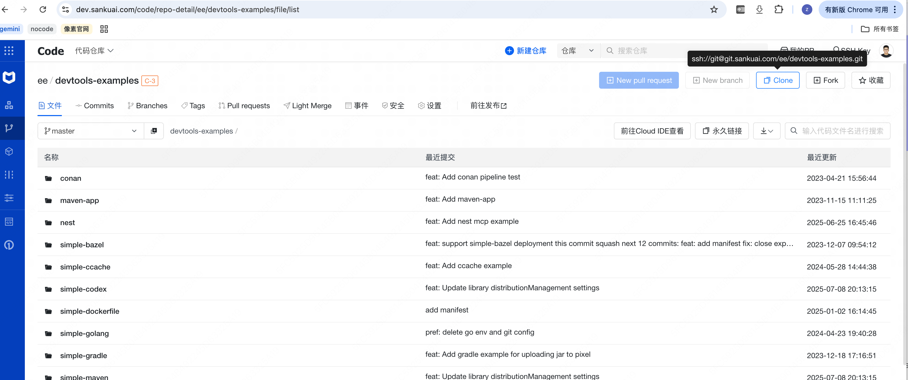
打开 CatPaw，点击 Clone 输入刚复制的仓库地址：
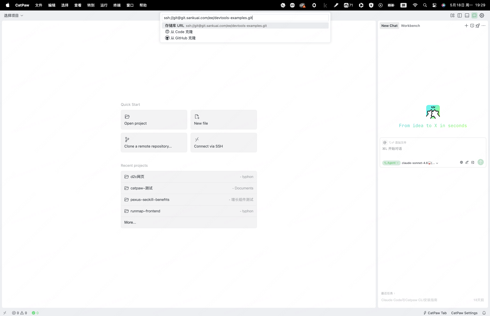
克隆完成后点击右下角 master，创建新的个人分支：
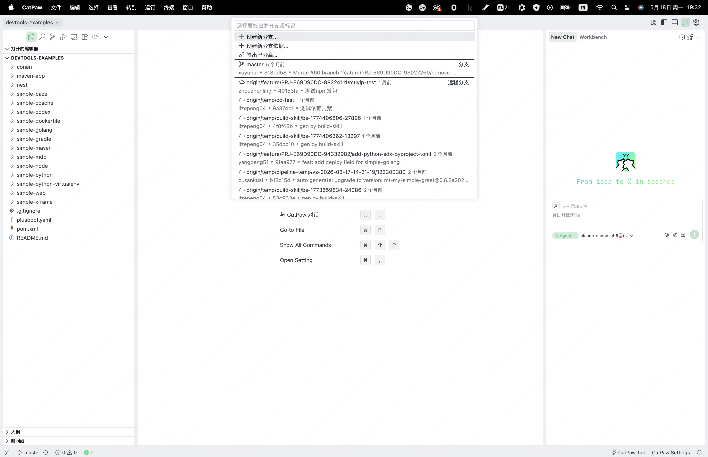
-
安装项目依赖 必需
进入项目目录，安装项目所需的 Node.js 依赖包：
pnpm install具体 Node.js 版本号请询问业务研发，推荐使用 nvm 管理 Node.js 版本。（通常 Node.js 版本 ≥ 14）
阶段二：设计稿准备 MasterGo
-
自动布局 (Auto Layout) 必需
将设计稿的容器改为自动布局，遵循「先组织容器、后填充内容」的原则：
- 容器使用自动布局，明确绝对定位图层（如悬浮按钮）
- 确保间距、对齐关系为整数，避免小数
- 层级结构遵循前端工程逻辑：容器嵌套 → 行列布局 → 内容填充
-
冗余图层检测 必需
打开 MasterGo 插件【AI友好化】，切换到「规范检查」标签，开启隐藏元素检测、自动布局检测、小数点检测等检查项，点击「开始检查」，根据检查结果逐项修复，确保设计稿符合规范。
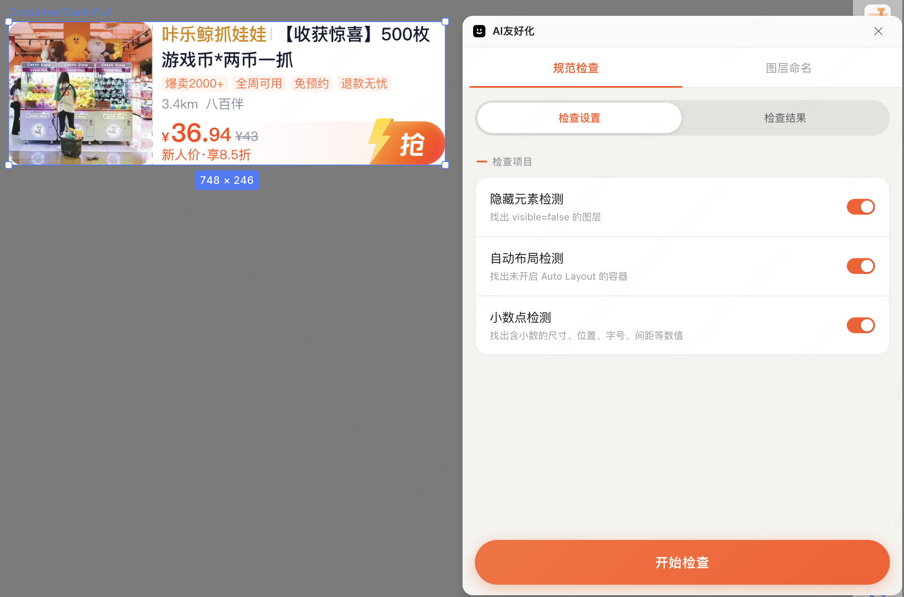
-
自动命名 必需
切换到「图层命名」标签，选中目标图层后点击「应用命名」，插件会自动生成语义化的组件名称（如
Container/Card-Full），确保 AI 能正确识别组件类型与结构。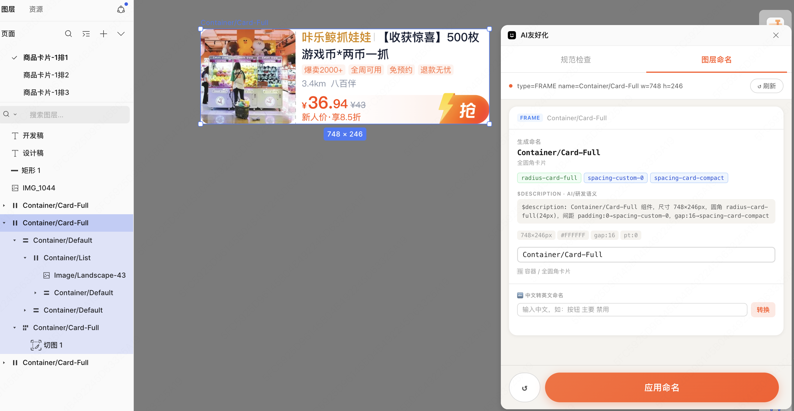
-
Token 创建绑定 可选
如果项目使用了 Design Token，需要在 MasterGo 中创建并绑定 Token。可使用插件【Token 自动化】。
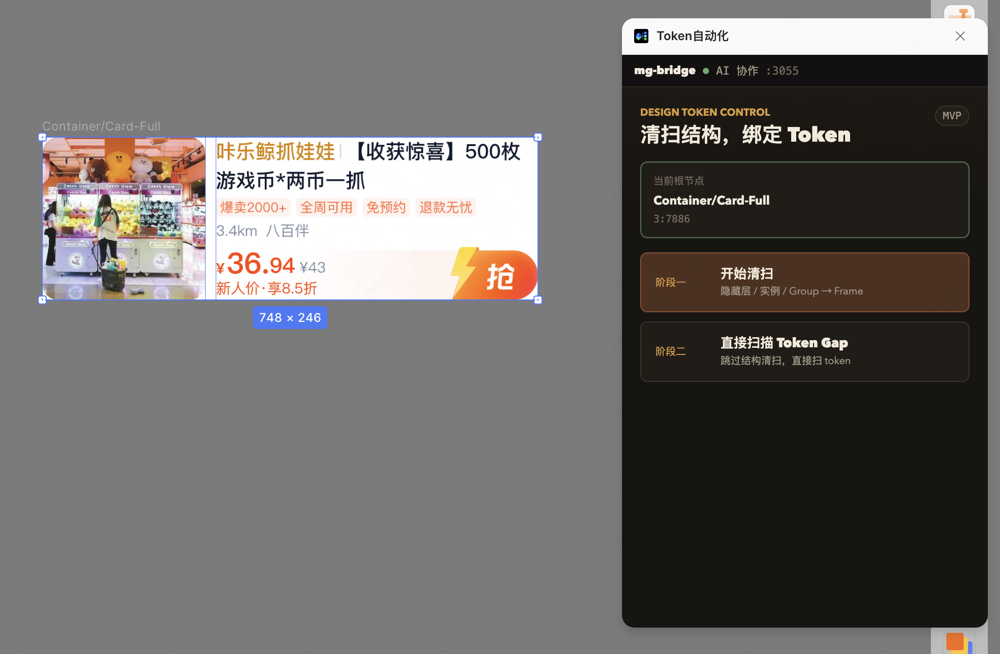
-
图片替换为 PNG 必需
将设计稿中的 icon 和装饰性图片图层转化为 PNG 格式。Skill 会自动切图并转化为链接。
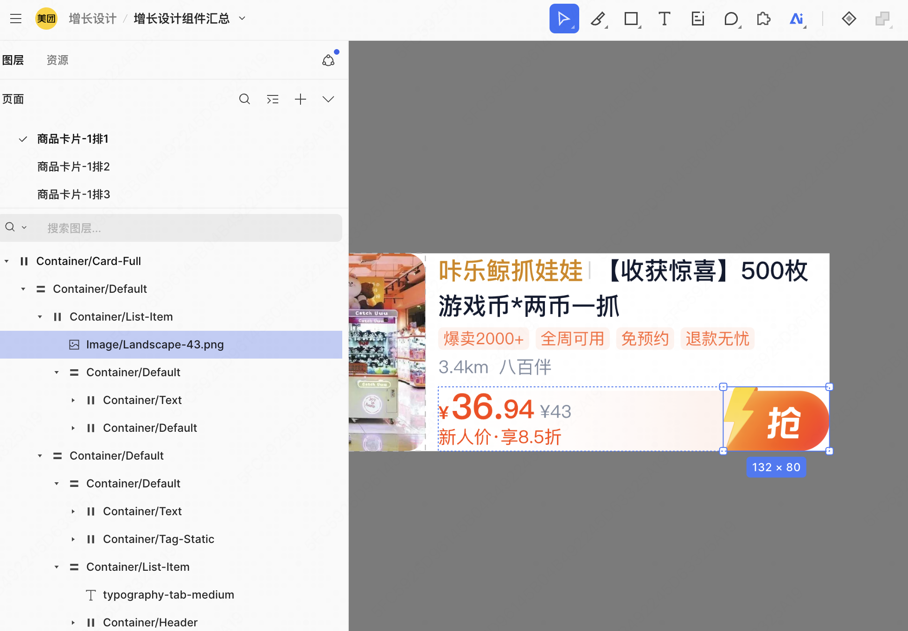
阶段三：Skill 应用与代码生成 CatPaw
-
粘贴容器画板 + 贴图 必需
在 CatPaw 中粘贴 MasterGo 设计稿的容器链接与参考截图，触发 Skill 进行 DSL 解析。
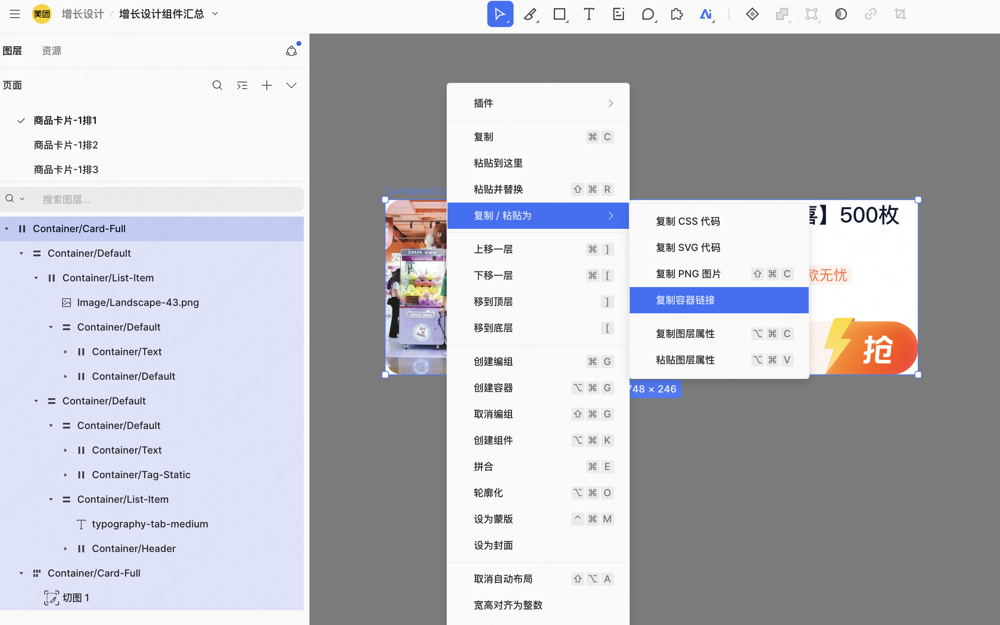
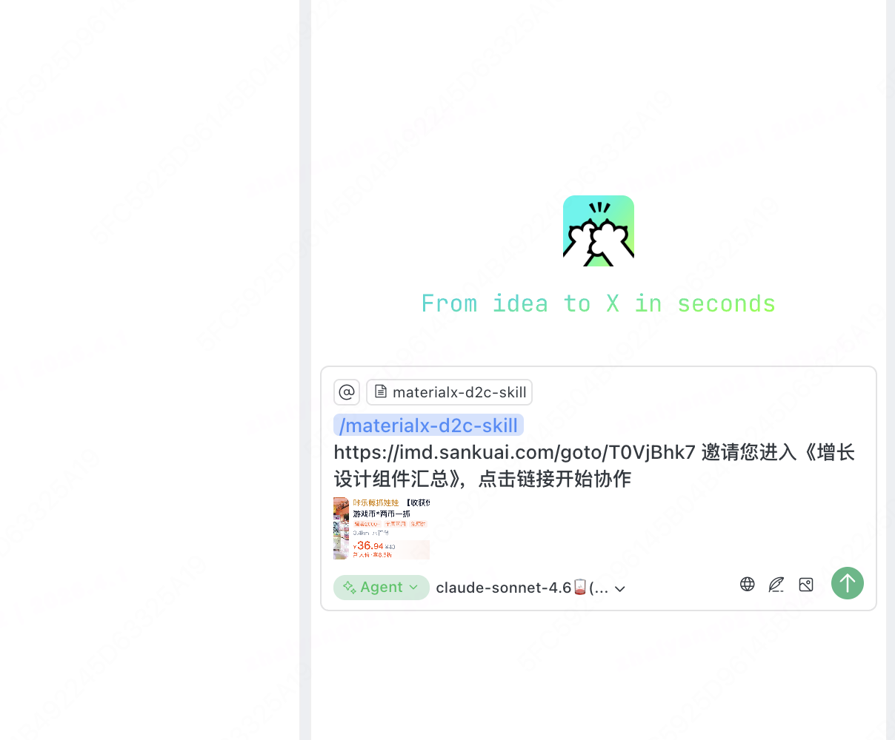
-
选择生成范围 必需
Pipeline 暂停后会展示推断结果，选择要实现的页面范围：
选项 说明 适用场景 A 完整页面 生成整个页面的代码 新页面开发 B 页面区块 生成页面中某个区块的代码 局部模块开发 C 独立组件 生成独立组件的代码 组件级开发 -
Skill 转码与自然语言指令调整 必需
触发代码生成后，Pipeline 自动执行拉取、切图、视觉对比（≥ 85 分 PASS）、TSX 生成等阶段。过程中可通过自然语言对结果进行修正微调。
代码生成结束后会提示完成，继续在对话框输入【扫码预览】启用 Skill，或通过
/skill选择【picasso-liveload-verify】，出现测试二维码后使用测试包扫码即可查看生成设计稿。视频演示
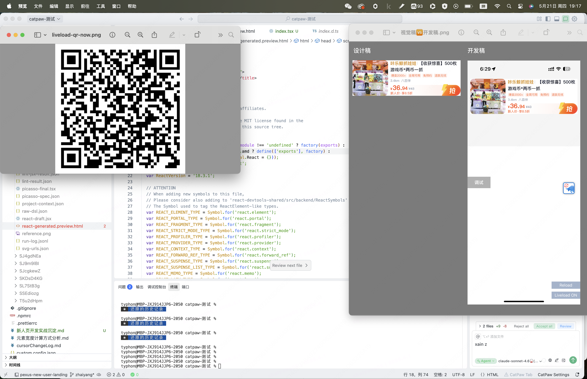
-
交付代码 完成
获取最终的
.tsx文件进行接口数据对接。请仅调整文案与属性，避免破坏底层结构。使用过程有问题可以联系 gaotian13、zhaiyang02 同学～